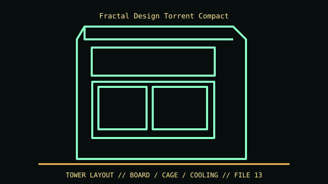

[ IDENTIFIED ENCLOSURE // TORRENT COMPACT (STANDARD, NOT NANO/TORRENT) ]
Fractal Design Torrent Compact
222 × 467 × 450 mm (W × D × H); GPU up to 330 mm with front fan and 341 mm without; CPU cooler maximum 174 mm.

VARIANT / ARCHIVAL CAVEAT: Torrent Compact has separate standard/RGB bundles and differs from the full Torrent, Nano and XL. Check SKU, included 180 mm fans and drive brackets.
Mechanical specifications and fit
| Catalog identity | Torrent Compact (standard, not Nano/Torrent) |
|---|---|
| Dimensions and clearances | 222 × 467 × 450 mm (W × D × H); GPU up to 330 mm with front fan and 341 mm without; CPU cooler maximum 174 mm. |
| Drive bays / mounts | One 3.5-inch drive position and up to three 2.5-inch positions in product sheet configuration. |
| Board, system and compatibility | ATX, microATX and Mini-ITX; 7 slots. Large front fan and radiator/fan stack reduce graphics clearance. |
| Revision / identification | Torrent Compact has separate standard/RGB bundles and differs from the full Torrent, Nano and XL. Check SKU, included 180 mm fans and drive brackets. |
Preservation and installation notes
Torrent Compact has separate standard/RGB bundles and differs from the full Torrent, Nano and XL. Check SKU, included 180 mm fans and drive brackets.
ATX, microATX and Mini-ITX; 7 slots. Large front fan and radiator/fan stack reduce graphics clearance.
- Capture the complete model/SKU, serial/date label, board assembly and bay/backplane/riser identifiers before disassembly; keep matched screws, trays, carriers, feet and cables with the case.
- Check the cited manual's specific build option before transferring hardware. Published maximum GPU, drive, fan or radiator capacity may not be simultaneous when a removable cage or alternative riser occupies that volume.
- For rack and vintage systems, preserve the exact rails, shields, doors, brackets and model-specific safety instructions; do not infer compatibility from a familiar brand or physical connector shape.
Manufacturer manuals and archival sources
- Fractal Design Torrent Compact specificationsPrimary manufacturer or model-specific technical/manual reference used for the identification and mechanical data above.
- Fractal Design Torrent Compact product sheetSecond product manual, manufacturer resource or established technical archive; choose the exact regional SKU and revision.
When exact dimensions depend on configuration, the text says so; verify the measured specimen before making a fit or restoration decision.